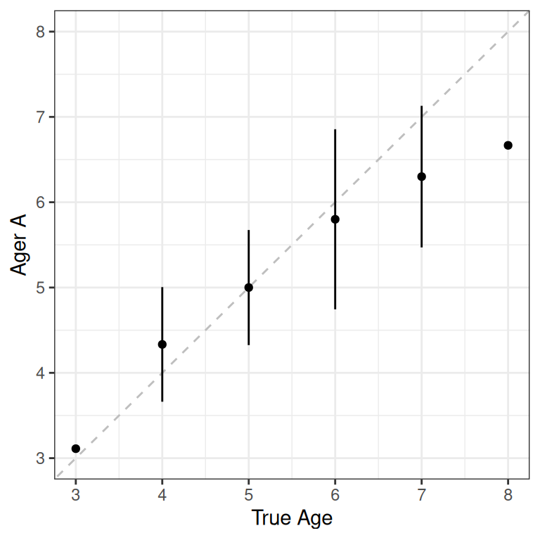
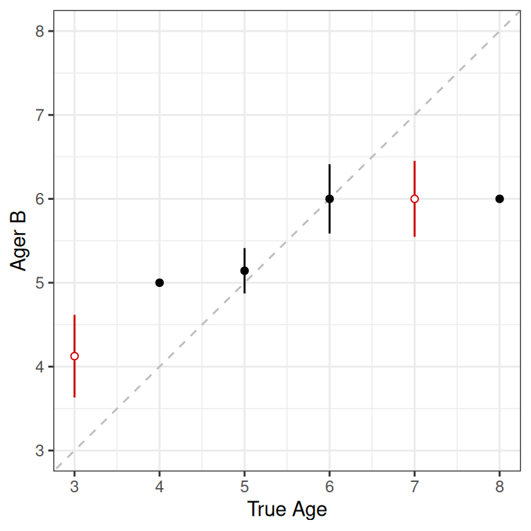
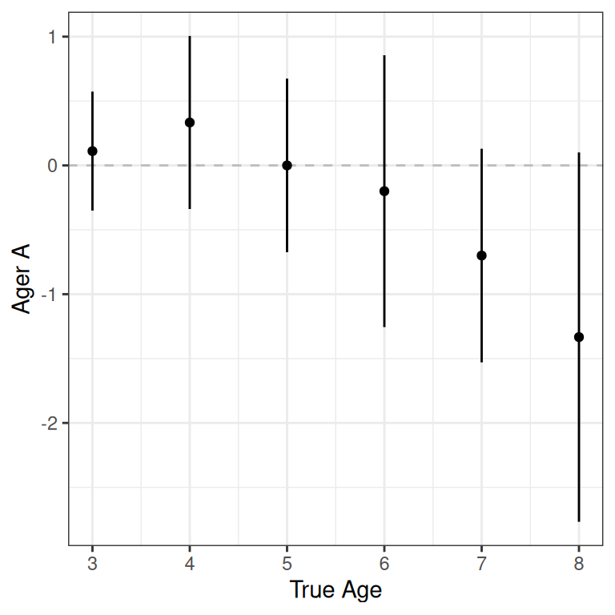
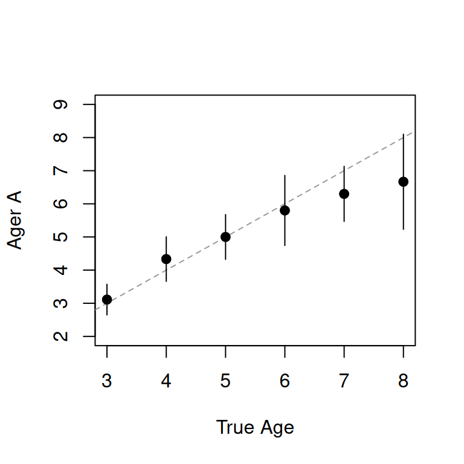

Introduction
Information about the age of fish is used to determine rates of mortality, growth, and maturation, which are key components of population models used to make fisheries management decisions. Ages of fish are often estimated by assessing patterns found in calcified structures such as scales, fin rays or spines, and otoliths. Ages estimated from calcified structures may not equal the true age of the fish, may not be the same among different technicians, or may not be the same between structures. Given the importance of age data in fisheries management, it is critical to understand sources of variability, precision, and bias in age estimates.1
The following packages are used herein.
In addition, the theme for plots made with ggplot2 is set to theme_bw() for all plots. Further modifications to the them can be made but are not here to keep the code as simple as possible.2
Data Requirements
The true age of each fish must be known to determine the accuracy of age estimates. Bias among structures or technicians is determined from paired age estimates for the same fish. Finally, precision among structures or technicians is examined with two or more age estimates for the same fish.
The data for the example used in Ogle (2016) is in ShadCR distributed with FSAdata.3 The true ages (trueAge) for fish in this sample were known because the Shad had been marked prior to being stocked. Additionally, three biologists twice (independently) estimated the age from scales for each fish. The estimated age variables are labeled with ager, a letter for the three biologists (A, B, or C) and a number for which time the scale was interpreted (1 or 2). Some biologists chose not to assign an age to some scales and, thus, those data are missing (shown as NA values).
data("ShadCR",package="FSAdata") # retrieve data
peek(ShadCR,n=6)
#> fishID trueAge agerA1 agerA2 agerB1 agerB2 agerC1 agerC2
#> 1 00-LR2 5 5 3 NA NA 4 3
#> 11 SR-12 3 4 4 4 4 4 3
#> 21 LR15-01 6 3 5 NA NA 3 3
#> 32 SR-6 03 4 NA NA NA NA NA NA
#> 42 LR47-01 5 4 4 5 5 3 2
#> 53 LR54-00 5 6 6 NA NA 6 3These data will be used herein to examine (1) accuracy by comparing the estimated ages from a biologist to the known ages (for simplicity, only the first estimate for a biologist will be used) and (2) precision by comparing between the two estimates by the same biologist and also by comparing among the first estimates of all three biologists. Note that bias is examined as with accuracy, except that two estimated ages are compared rather than one estimated age compared to the true age. Thus, separate examples for bias are not shown here.
Accuracy/Bias Assessment
Age-Agreement Table
An age-agreement table is a contingency table that shows how two sets of ages are related. The main diagonal in an age-agreement table represents the individuals for which the two ages are the same. While it ultimately does not make a difference which set of estimated ages form the rows and columns of the age-agreement table, I prefer to have the known or more reliable ages (I call them the “reference ages”) form the columns.
An age-agreement table can be formed with FSA by using ageBias() with the first argument being a formula of the form nonrefvar~refvar, with nonrefvar and refvar generically representing the variables that contain the non-reference and reference ages, respectively. The data.frame that contains these variables is given in data=. Labels for the reference and non-reference variables may be given in ref.lab= and nref.lab=, respectively. The result from ageBias() should be assigned to an object for post-processing.
ab.tA1 <- ageBias(agerA1~trueAge,data=ShadCR,
ref.lab="True Age",nref.lab="Ager A")ageBias() computes a number intermediate results and summary statistics that can be specifically extracted with other functions. For example, the age-agreement table is extracted with summary() using the object saved from ageBias() and what="table".
summary(ab.tA1,what="table")
#> True Age
#> Ager A 2 3 4 5 6 7 8
#> 2 - 1 - - - - -
#> 3 - 6 2 - 1 - -
#> 4 - 2 3 3 - - -
#> 5 - - 3 5 3 3 -
#> 6 - - 1 1 4 3 1
#> 7 - - - 1 - 2 2
#> 8 - - - - 2 2 -Here, for example, it is seen that of the nine true age-3 fish (i.e., the 2nd column) Ager A assigned one fish as age 2, six as age 3, and two as age 4.
Age-Bias Plot
An age-bias plot is used to identify systematic bias between two sets of ages from the same fish. True ages or ages that are thought to be more accurate will be considered as the “reference ages”, as mentioned above. In the traditional age-bias plot, the mean age and associated confidence interval computed from the non-reference ages for each reference age is plotted against the corresponding reference age. The plot is augmented with a 1:1 agreement line (i.e., points where the mean non-reference and reference ages are equal). Confidence intervals that do not capture the agreement line indicate a difference (or bias or inaacuracy) between the mean non-reference and reference ages.
The summary statistics required to construct a traditional age-bias plot are computed by ageBias() and stored in the bias portion of the assigned object.
ab.tA1$bias # ab.tA1 was computed previously (above)
#> trueAge n min max mean SE t adj.p sig LCI
#> 1 3 9 2 4 3.111111 0.2003084 0.5547002 1.00000 FALSE 2.649199
#> 2 4 11 3 6 4.333333 0.3015113 1.1055415 1.00000 FALSE 3.661524
#> 3 5 10 4 7 5.000000 0.2981424 0.0000000 1.00000 FALSE 4.325555
#> 4 6 10 3 8 5.800000 0.4666667 -0.4285714 1.00000 FALSE 4.744327
#> 5 7 10 5 8 6.300000 0.3666667 -1.9090909 0.44295 FALSE 5.470542
#> 6 8 3 6 7 6.666667 0.3333334 -3.9999997 0.34315 FALSE 5.232449
#> UCI canCI
#> 1 3.573023 TRUE
#> 2 5.005142 TRUE
#> 3 5.674445 TRUE
#> 4 6.855673 TRUE
#> 5 7.129458 TRUE
#> 6 8.100884 TRUEFor example, the first row above gives the number, minimum, maximum, mean, and standard error of the first estimated ages of Ager A that were paired with a true age of 3. Additionally there is a t-test, adjusted p-value, and a significance statement for testing whether the mean estimated age is different from the true age of 3. Finally, confidence intervals (defaults to 95%) for the mean estimated age at a true age of 3 is given, with a statement about whether or not a confidence interval could be calculated.4
A typical age-bias plot (Figure 1) is created below with ggplot2 from the results in thebias object. The specifics of the code below are as follows.
- The base data used in this plot is the
$biasdata.frame discussed above. - The 45o agreement line (i.e., slope of 1 and intercept of 0) is added with
geom_abline(), using a dashedlinetype=and a graycolor=. This “layer” is first so that it sits behind the other results. - Error bars are added with
geom_errorbar(). Theaes()thetics here map the true age to thex=axis and the lower and upper confidence interval values for the mean estimated age at each true age toymin=andymax=. Thecolor=of the lines are mapped to thesigvariable so that points that are significantly different from the 45o agreement line will have a different color (withscale_color_manual()described below). Finally,width=0assures that the error bars will not have “end caps.” - Points at the mean estimated age (
y=) for each true age (x=) are added withgeom_point(). Again, thecolor=andfill=are mapped to thesigvariable so that they will appear different depending on whether the points are significantly different from the 45o agreement line or not. Finally,shape=21represents a plotted point as an open circle that is outlined withcolor=and filled withfill=. -
scale_fill_manual()andscale_color_manual()are used to set the colors and fills for the levels in thesigvariable. Note thatguide="none"is used so that a legend is not constructed for the colors and fills. -
scale_x_continuous()andscale_y_continuous()are used to set the labels (withname=), axis limits, and axis breaks for the x- and y-axes, respectively. The same limits are used for each axis so that the 45o agreement line can be seen for all observed reference ages. The names are drawn from labels that were given in the original call toageBias()and stored inab.tA1.
ggplot(data=ab.tA1$bias) +
geom_abline(slope=1,intercept=0,linetype="dashed",color="gray") +
geom_errorbar(aes(x=trueAge,ymin=LCI,ymax=UCI,color=sig),width=0) +
geom_point(aes(x=trueAge,y=mean,color=sig,fill=sig),shape=21) +
scale_fill_manual(values=c("FALSE"="black","TRUE"="white"),guide="none") +
scale_color_manual(values=c("FALSE"="black","TRUE"="red3"),guide="none") +
scale_x_continuous(name=ab.tA1$ref.lab,breaks=0:10,limits=c(3,8)) +
scale_y_continuous(name=ab.tA1$nref.lab,breaks=0:10,limits=c(3,8))
Figure 1 suggests that there is no systematic inaccuracies between the first age estimates made by Ager A and the true ages of the Shad as all confidence intervals “capture” the 45o agreement line. The same plot for the first estimates of Ager-B demonstrate a systematic inaccuracy (Figure 2), noting the color coding for the points and intervals for ages that depict a significant difference.
ab.tB1 <- ageBias(agerB1~trueAge,data=ShadCR,
ref.lab="True Age",nref.lab="Ager B")
ggplot(data=ab.tB1$bias) +
geom_abline(slope=1,intercept=0,linetype="dashed",color="gray") +
geom_errorbar(aes(x=trueAge,ymin=LCI,ymax=UCI,color=sig),width=0) +
geom_point(aes(x=trueAge,y=mean,color=sig,fill=sig),shape=21) +
scale_fill_manual(values=c("FALSE"="black","TRUE"="white"),guide="none") +
scale_color_manual(values=c("FALSE"="black","TRUE"="red3"),guide="none") +
scale_x_continuous(name=ab.tB1$ref.lab,breaks=0:10,limits=c(3,8)) +
scale_y_continuous(name=ab.tB1$nref.lab,breaks=0:10,limits=c(3,8))
Age-Difference Plot
An age-difference plot is similar to age-bias plot except that the mean difference (and confidence intervals) between the non-reference and reference ages are plotted on the y-axis (Figure 3). With this the agreement line is a horizontal line at 0. Construction of this plot is similar to above except that the summary results needed for the plot are in bias.diff of the object assigned from ageBias().
ab.tA1$bias.diff # ab.tA1 was computed previously (above)
#> trueAge n min max mean SE t adj.p sig LCI
#> 1 3 9 -1 1 0.1111111 0.2003084 0.5547002 1.00000 FALSE -0.3508009
#> 2 4 11 -1 2 0.3333333 0.3015113 1.1055415 1.00000 FALSE -0.3384758
#> 3 5 10 -1 2 0.0000000 0.2981424 0.0000000 1.00000 FALSE -0.6744449
#> 4 6 10 -3 2 -0.2000000 0.4666667 -0.4285714 1.00000 FALSE -1.2556734
#> 5 7 10 -2 1 -0.7000000 0.3666667 -1.9090909 0.44295 FALSE -1.5294576
#> 6 8 3 -2 -1 -1.3333333 0.3333334 -3.9999997 0.34315 FALSE -2.7675510
#> UCI canCI
#> 1 0.5730231 TRUE
#> 2 1.0051424 TRUE
#> 3 0.6744449 TRUE
#> 4 0.8556734 TRUE
#> 5 0.1294576 TRUE
#> 6 0.1008844 TRUEIn addition, geom_hline() is used to add the horizontal agreement line at 0, the breaks for the y-axis need to be adjusted, and the limits for both axes usually need not be specified.
ggplot(data=ab.tA1$bias.diff) +
geom_hline(yintercept=0,linetype="dashed",color="gray") +
geom_errorbar(aes(x=trueAge,ymin=LCI,ymax=UCI,color=sig),width=0) +
geom_point(aes(x=trueAge,y=mean,color=sig,fill=sig),shape=21) +
scale_fill_manual(values=c("FALSE"="black","TRUE"="white"),guide="none") +
scale_color_manual(values=c("FALSE"="black","TRUE"="red3"),guide="none") +
scale_x_continuous(name=ab.tA1$ref.lab,breaks=0:10) +
scale_y_continuous(name=ab.tA1$nref.lab,breaks=-3:2)
Modifications
Both the age-bias and age-difference plots can be modified in a variety of ways. Some options are demonstrated here and here. In addition, some authors have suggested using a Bland-Altman plot, which, along with a modification that I prefer, is illustrated here.
Bias Metrics
Modern statistical tests for bias focus on whether an age-agreement table is symmetric around the main diagonal. An age-agreement table is a contingency table that shows how two sets of ages are related. The main diagonal in an age-agreement table represents the individuals for which the two ages are the same. If there is no systematic bias between the two ages, then individuals where the paired ages disagree are equally likely to be above or below this main diagonal. Thus, the age-agreement table is symmetric around the main diagonal if there is no systematic bias between the two paired ages. Ogle (2016) described three statistical tests for assessing the symmetry of an age-agreement table – McNemar test (also known as maximally pooled), Evans-Hoenig test (also known as diagonally projected), and Bowker test (also known as unpooled).
Calculating all three tests of symmetry is a two-step process that begins with ageBias() as described previously for the age-bias plot. Results from the symmetry tests are displayed by submitting the ageBias() object to summary() along with what="symmetry". Alternatively, use what="McNemar", what="EvansHoenig", or what="Bowker" to show results from the individual symmetry tests.
summary(ab.tA1,what="symmetry") # ab.tA1 was computed previously (above)
#> symTest df chi.sq p
#> 1 McNemar 1 1.580645 0.2086678
#> 2 EvansHoenig 3 2.636364 0.4511502
#> 3 Bowker 10 8.333333 0.5963127The large p-values for all three symmetry tests suggest that the age estimates of Ager A were not systematically biased relative to the true ages (i.e., they were accurate).5
To partially illustrate the range of results that may appear in age-agreement tables and tests of symmetry, the first estimated ages from Agers B and C were also compared to the true ages. Ager B appeared to overestimate the age of young fish and underestimate the age of older fish, resulting in a significantly asymmetric age-agreement table, but only as detected by the Bowker test.
# note that ab.tB1 was constructed above
summary(ab.tB1,what="table")
#> True Age
#> Ager B 3 4 5 6 7 8
#> 3 1 - - - - -
#> 4 5 - - - - -
#> 5 2 3 6 1 1 -
#> 6 - - 1 5 4 2
#> 7 - - - 1 1 -
#> 8 - - - - - -
summary(ab.tB1,what="symmetry")
#> symTest df chi.sq p
#> 1 McNemar 1 0.800000 0.3710934
#> 2 EvansHoenig 2 1.866667 0.3932407
#> 3 Bowker 7 14.800000 0.0386503In contrast, Ager C appeared to underestimate the age of all fish after age 3, resulting in a significantly asymmetric age-agreement table as detected by all three symmetry tests.
ab.tC1 <- ageBias(agerC1~trueAge,data=ShadCR,
ref.lab="True Age",nref.lab="Ager C")
summary(ab.tC1,what="table")
#> True Age
#> Ager C 2 3 4 5 6 7 8
#> 2 - 4 2 1 - - -
#> 3 - 3 6 6 2 2 -
#> 4 - 2 2 2 2 2 -
#> 5 - - - - 5 2 2
#> 6 - - - 1 1 2 1
#> 7 - - - - - 1 -
#> 8 - - - - - 1 -
summary(ab.tC1,what="symmetry")
#> symTest df chi.sq p
#> 1 McNemar 1 30.42222 3.475241e-08
#> 2 EvansHoenig 4 31.78261 2.119129e-06
#> 3 Bowker 16 35.66667 3.218018e-03Precision
Precision Metrics
There are three commonly used measures of precision among multiple age estimates made on the same fish. Percent agreement is the percentage of age estimates for the same fish that either perfectly agree or agree within a certain amount (e.g., within two years of each other). Average percent error (APE) is defined as
where is the th age for the th fish, is the mean age for the th fish, is the number of times that each fish was aged (assumed to be the same for all fish), and is the number of aged fish in the sample. Finally, the average coefficient of variation (ACV) is defined as
where is the standard deviation of the age estimates for the th fish.
All three measures of precision are calculated in a two-step process that begins with agePrecision() from FSA. The first argument to agePrecision() is a formula of the form ~var1+var2+..., where var1, var2, etc. are the variables that contain the multiple age estimates.6 The data.frame that contains the variables must be given in data=. Again, the result should be assigned to an object for post-processing. For example, precision between the two age estimates made by Ager A is assessed below.
ap.A <- agePrecision(~agerA1+agerA2,data=ShadCR)Two types of percentage agreement tables may be extracted by submitting the agePrecision() object to summary(). The percentage table of raw differences is extracted with what="difference".
summary(ap.A,what="difference")
#> -2 -1 0 1 2 3
#> 3.922 15.686 50.980 19.608 7.843 1.961These results show that both estimates by Ager A agreed for 51.0% of the fish and that the second estimate was two years older for 3.9% of the fish, but two years younger for 7.8% of the fish.
Use what="absolute difference" to extract the percentage table of the absolute value of the differences.
summary(ap.A,what="absolute difference")
#> 0 1 2 3
#> 50.980 35.294 11.765 1.961These results show that the two age estimates agreed for 51.0% of the fish (as above) and differed by two years (either way) for 11.8% of the fish.
The APE and ACV (along with average standard deviation (ASD) and average absolute deviation (AAD)) are extracted by including what="precision" in summary().
summary(ap.A,what="precision")
#> n validn R PercAgree ASD ACV AAD APE
#> 53 51 2 50.98 0.4575 9.739 0.3235 6.887The age precision results may be computed for more than two age estimates. For example, the results below examine precision among the first readings made by all three agers.7
ap.ABC <- agePrecision(~agerA1+agerB1+agerC1,data=ShadCR)
summary(ap.ABC,what="difference")
#> -2 -1 0 1 2 3 4
#> agerA1 - agerB1 18.182 15.152 45.455 12.121 9.091 0.000 0.000
#> agerA1 - agerC1 0.000 5.882 19.608 41.176 19.608 11.765 1.961
#> agerB1 - agerC1 0.000 6.061 6.061 36.364 36.364 15.152 0.000
summary(ap.ABC,what="precision")
#> n validn R PercAgree ASD ACV ACV2 AAD APE APE2 AD
#> 53 33 3 6.061 1.001 22.98 24.94 0.7273 16.7 14.27 13.27Other Considerations
Built-In Age-Bias Plot
A quick-and-dirty, not publication quality, traditional age-bias plot may be constructed from ageBias() object with plotAB().
plotAB(ab.tA1)
Individual Fish
The objects returned from ageBias() and agePrecision() contain intermediate calculations for individual fish that can be used for further analysis. For example, data in the ageBias() object contains the original two age estimates along with the difference and the mean of those two estimates. Some authors have used these data to create mixed models to assess components that might contribute to ageing error (here is one example).
peek(ab.tA1$data,n=6)
#> agerA1 trueAge diff mean
#> 1 5 5 0 5.0
#> 11 4 3 1 3.5
#> 21 3 6 -3 4.5
#> 32 NA 4 NA NA
#> 42 4 5 -1 4.5
#> 53 6 5 1 5.5detail in the agePrecision() object contains a variety of information related to the estimates for the individual fish, including the individual level CV and PE.8 One example of individual-based analyses that may derive from these data is shown here.
peek(ap.A$detail,n=6)
#> agerA1 agerA2 mean median mode SD CV CV2 AD PE PE2 D
#> 1 5 3 4 4 NA 1.414214 35.35534 35.35534 1 25 25 25
#> 11 4 4 4 4 4 0.000000 0.00000 0.00000 0 0 0 0
#> 21 3 5 4 4 NA 1.414214 35.35534 35.35534 1 25 25 25
#> 32 NA NA NA NA NA NA NA NA NA NA NA NA
#> 42 4 4 4 4 4 0.000000 0.00000 0.00000 0 0 0 0
#> 53 6 6 6 6 6 0.000000 0.00000 0.00000 0 0 0 0